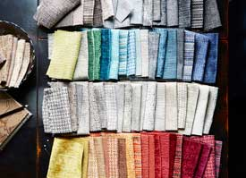

SUSTAINABILITY COMMITMENT
CORPORATE SOCIAL RESPONSIBILITY
Success, But Not at Any Price
At P/Kaufmann Contract we believe that corporate and environmental responsibility are inextricably linked. Over the past three decades we have worked to develop culture and initiatives that protect the environment and enhance our community.
Specializing in Custom Development
Creating custom fabrics is one of our specialties at Harmel Home Contract. We collaborate with our customers to develop project-specific designs and qualities that provide solutions within a specified budget and timeframe.

Mindful Material Sourcing
When sourcing dyes for our printed and woven fabrics, we seek out suppliers with robust environmental strategies. Our major domestic print source utilizes water-based rather than chemical-based inks, and recently installed an in-house water filtration system to ensure that clean, filtered water is returned to the community. They also use recycled water throughout the manufacturing process and use heat transfer printing paper that is Forest Stewardship Council certified. After it has been used for printing our fabrics, the paper is recycled to eliminate waste.